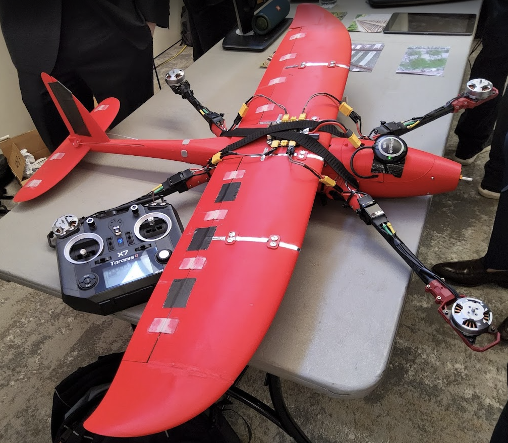
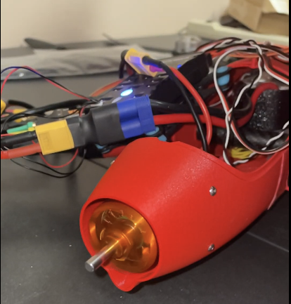
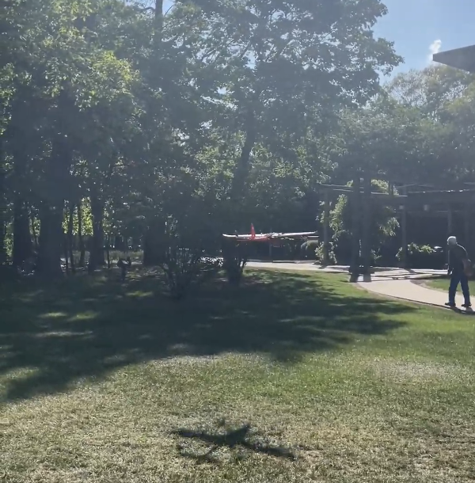
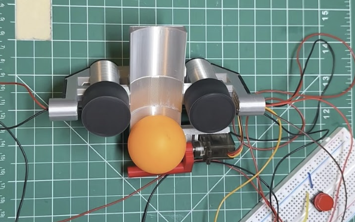
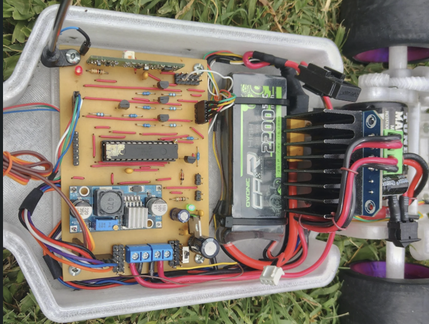

Charles J. Lee
Electrical & Computer Engineering — Rutgers University Honors College
Dean's List every semester
completed
projects



- Designed a ResNet-34 vegetation detection model achieving ~97% accuracy for onboard perception on an autonomous quadplane
- Integrated real-time inference on Raspberry Pi 4B with Pixhawk/ArduPilot flight stack for autonomous decision-making
- Designed PCB in KiCad for power distribution board with regulated 5V and 12V rails supporting 7 onboard interfaces
- Reduced debug turnaround by 40% through structured oscilloscope and logic analyzer fault isolation
- Created wiring diagrams, validation checklists, and setup instructions across 3 prototype build cycles
This project pushed me to work across the full stack of an autonomous system simultaneously, from soldering power distribution boards and routing wiring harnesses to training a convolutional neural network and deploying it on flight hardware. The most challenging part was not building any single component but making them all work together reliably. Integrating the perception pipeline with the Pixhawk flight stack required careful timing and interface work, and debugging intermittent I2C faults mid-integration taught me more about structured hardware troubleshooting than any coursework had. By the end I had a flying platform where a model I trained was actively influencing decisions in the air, which was unlike anything I had built before.
- Built Python/Linux workflows processing 36 years of climate data across 5 Global Climate Models and 6 variables
- Automated metric generation for a TensorFlow pipeline trained for 160 epochs and ~120,000 iterations
- Supported GPU-accelerated training on TACC Frontera HPC cluster
- Benchmarked model outputs using RMSE and MAE comparisons against bilinear interpolation baselines
Coming into this internship my ML experience was mostly project-based. Working on a real research pipeline at scale changed how I think about software engineering. Processing 36 years of climate data across five global models meant that sloppy code had real consequences, since a poorly structured workflow would take hours longer to run on the HPC cluster. I learned to write Python that was not just functional but repeatable, documented, and efficient under compute constraints. The experience also gave me a much deeper appreciation for evaluation methodology: understanding why RMSE against a bilinear baseline is meaningful, and where a model fails on extreme-event cases, requires thinking carefully about what you are actually measuring and why it matters.
Presented at Rutgers Aresty Research Center for Undergraduates

Click to enlarge
- Supported 4 semesters of electronics labs assisting 20+ students with bench setup and circuit debugging
- Performed soldering and rework on 15+ circuits and components to restore lab hardware and reduce downtime

I built this project to practice closing the loop between perception and physical actuation, something I had done at a higher level on the drone but wanted to own completely from scratch. Designing the startup self-test and safety interlock logic was one of the most satisfying parts. Before this project I would have just written the targeting loop and called it done. Thinking through what could go wrong on power-on, what faults needed to block operation, and how to log behavior across repeated trials pushed me to think like a systems engineer rather than just a programmer. The accuracy improvement from 56% to 82% came entirely from iterating on proportional gain tuning and deadband threshold, which taught me how sensitive real physical systems are to parameters that look simple on paper.

This project started as a practical problem: I was tired of discovering mid-run that something was wrong with the car. Building a structured diagnostic console forced me to think carefully about failure modes and how to detect them programmatically before they cause issues. Writing firmware that checks I2C device connectivity, validates IMU data at rest, and measures motor driver current response taught me that reliability engineering is its own discipline. Detecting 8 of 10 injected failure cases was encouraging but the 2 misses were just as instructive. They pointed to edge cases in my voltage threshold logic that I had not anticipated, and that kind of honest evaluation of what your system does and does not catch is something I carry into every project now.
ResNet · Real-time inference
NumPy · Scikit-learn · Matplotlib
ArduPilot / Pixhawk
HPC workflows
PCB design · KiCad · LTspice
UART / I2C / SPI validation
Sensor bring-up · Wiring
Soldering / rework
DMM · Bench power supplies
Structured bring-up
Fault isolation
Serial logging
Linux · Git · Java
AutoCAD · SolidWorks
Microsoft Office
KiCad · LTspice